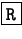
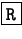
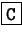
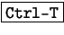
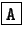
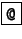

Para ver el mensaje seleccionado, naturalmente se pulsa  ,
como en la figura 3.5. Para
responder el mail seleccionado, se utiliza la tecla , el
programa preguntará si se quiere citar el mensaje anterior, esto es
bueno hacerlo, siempre y cuando las citas se mantengan en un límite
adecuado y no se abuse de las mismas.
,
como en la figura 3.5. Para
responder el mail seleccionado, se utiliza la tecla , el
programa preguntará si se quiere citar el mensaje anterior, esto es
bueno hacerlo, siempre y cuando las citas se mantengan en un límite
adecuado y no se abuse de las mismas.
Si se quiere escribir un mensaje desde cero, la tecla  en las diferentes secciones del programa tiene la misma funcionalidad, componer mensajes. Al activar esta función, el programa cargará el editor de mensajes, con el encabezado del mensaje a enviar arriba, y el lugar para el cuerpo por debajo, como se puede observar en la figura 3.6.
Se supone que el alumno sabe como enviar correo electrónico, este curso no se trata de ello, así que no se explicarán las funciones de cada campo del encabezado del mensaje a componer, lo que si vale la pena aclarar, es el uso de la libreta de direcciones (addressbook) y los archivos incluídos (file attach) dentro de los mensajes. Cuando el cursos se encuentra en el campo To:, pulsando  se puede seleccionar la dirección de destino que tengamos almacenada en la libreta de direcciones.
Cuando se necesite enviar uno o varios archivos por correo electrónico, se debe posicionar el cursor en el campo Attachmnt: y pulsando , se carga un navegador de disco como el que se ve en la figura 3.7.
Una característica del pine que no se ha visto, es la del addressbook, con esta libreta de direcciones se puede mantener toda la lista de contactos de forma fácil. Estando en la pantalla principal, se puede acceder pulsando la tecla , y de esta forma se obtiene la lista de contactos ingresados. Primeramente se tendrá la lista vacía, cuando se necesite agregar un nuevo contacto, se utiliza (como se puede ver en el menú) la tecla , apareciendo de esta manera una pantalla como la que se ve en la figura 3.8.
En el campo Nickname: se debe ingresar el alias de la persona que luego se utilizará en el campo To: cuando se compone un mensaje. De esta manera, no hará falta escribir todo el nombre de la persona.